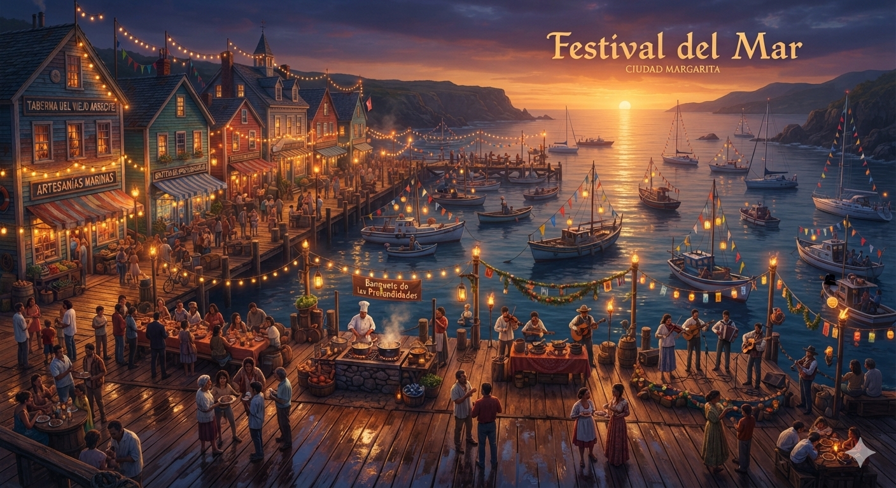
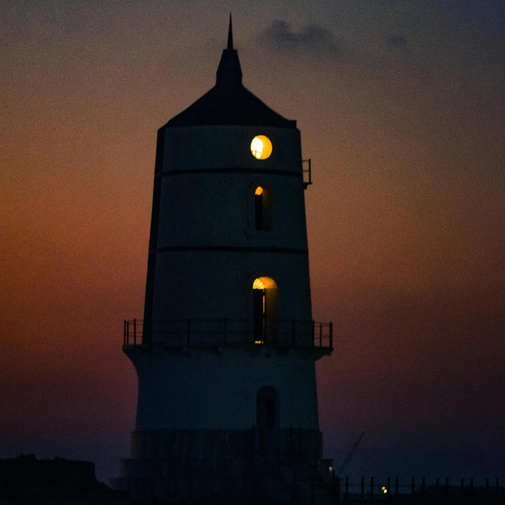

Los mejores lugares turísticos de Ciudad Margarita
Pueblo de Arkham
📍 Ubicación: Zona Noroeste de Ciudad Margarita
Pueblo de Arkham
La danza de Erich Zann
Situado en la zona noroeste, el
Pueblo de Arkham nos ofrece un verdadero viaje en
el tiempo que atrapa a los visitantes gracias a sus interesantes
casas y callejones de piedra, con un llamativo estilo antiguo y
mítico. Este rincón histórico representa uno de los pilares
culturales más importantes de la región; cada
cuatro meses, sus calles se transforman en el
escenario de festivales comunitarios destinados a mantener las
tradiciones locales a través de la gastronomía y la venta de
artilugios medievales únicos, ideal para aquellos que les apasiona
las reliquias antiguas. El principal motivo para visitarlo es
presenciar su baile cultural más emblemático: la
"Danza de Erich Zann", un espectáculo musical
tradicional del cual vas a poder disfrutar y participar, siendo
guiado por la gente local. Esta danza cultural es muy importante
para Arkham debido a que se comenta que posee la habilidad de
ahuyentar las malas energías, atrayendo bienestar, felicidad y paz a
todos aquellos que presencien o participen de la actividad.
Museo de Dunwich
📍 Ubicación: Zona Noroeste de Ciudad Margarita
Museo de Dunwich
Llave de Plata
En el centro de la ciudad se encuentra el imponente
museo de Dunwich, un complejo arquitectónico de
estilo gótico que se ha convertido en un atractivo turístico
indispensable debido a su aura mística y su patrimonio histórico.
Los viajeros eligen este destino para recorrer sus famosos jardines,
repletos de misteriosas estatuas de piedra cuyos rostros parecen
cambiar según desde que ángulos sean vistos, así como para explorar
su valiosa colección de libros antiguos y totems únicos. Sin duda,
la gran atracción del museo es "La Llave de Plata",
una reliquia histórica perteneciente a los primeros exploradores de
la región; la leyenda local asegura que quienes la observan con
atención logran recuperar la inspiración y los sueños perdidos de la
infancia. Se recomienda planificar la visita durante las
"Noches de Astronomía y Letras", un evento mensual
donde se realizan observaciones con telescopios antiguos en las
torres y se relatan mitos locales a la luz de las velas, es una
experiencia sumamente interesante debido al ambiente que genera el
museo y las diversas antigüedades dentro del mismo.
Puerto de Innsmouth
📍
Ubicación: Extremo Este de Ciudad Margarita (Zona Costera)
Puerto de Innsmouth

Festival del Mar
Hacia el extremo este de Margarita se despliega el
Puerto de Innsmouth, un cautivador barrio marítimo
cuyas coloridas formas de madera y muelles tradicionales ofrecen una
cálida bienvenida a los amantes del océano. Este sector es un
paraíso para el entretenimiento y el descanso, donde los turistas
pueden recorrer la feria artesanal de la costanera, famosa por su
hermosa joyería hecha de un extraño y brillante oro local o alquilar
barcas para explorar la orilla. No obstante, la actividad estrella
es el tour embarcado hacia el majestuoso
Mar de Yuggoth, una reserva natural reconocida por
sus paisajes de acantilados e imponentes escenarios, ideal para el
avistamiento de fauna marina. Para mejorar la experiencia, se
sugiere asistir al "Festival del Mar" durante la
temporada de verano. Este festival se celebra todos los años a
mediados del verano y transforma por completo los muelles, que se
vuelven peatonales y se llenan de adornos, luces flotantes y puestos
con la mejor gastronomía local. Durante tres días se pueden ver
espectaculares competiciones de veleros, desfiles de barcos
pesqueros decorados con antorchas al atardecer y música náutica en
vivo al aire libre. La gran atracción del evento es el famoso
"Banquete de las Profundidades", una comida
comunitaria donde los chefs locales cocinan de forma gratuita para
todos los asistentes. Es la oportunidad ideal para disfrutar frente
al mar, interactuar con los habitantes del puerto y conocer de cerca
su cultura marinera.
El Faro de Ragnar
📍
Ubicación: Extremo Norte de Ciudad Margarita (Zona Costera)

Faro de Ragnar
Hacia el extremo Norte de Margarita se alza
El Faro de Ragnar, una antigua contruccion de
El Faro de Ragnar, una antigua construcción de
piedra del año 1505 ,de aspecto imponente y desgastado por el paso
del tiempo y la fuerza del océano. Su enorme torre blanca está
coronada por una luz que, durante las noches, ilumina las aguas y
sirve como guía para los barcos que se acercan a la costa. Su
colosal estructura, que una vez guió a los marineros a través de las
traicioneras aguas del océano guarda muchos misterios. Los
habitantes de la ciudad cuentan que, en las noches de niebla, la luz
del faro parece comportarse de manera extraña y puede verse incluso
desde lugares muy alejados. El faro está rodeado de acantilados,
senderos y una extensa vista del océano, convirtiéndolo en uno de
los lugares más misteriosos y visitados de Ciudad Margarita. Según
antiguas leyendas, Ragnar fue el nombre del primer
guardián del faro, quien desapareció una noche sin dejar ningún
rastro. Hoy, el Faro de Ragnar es considerado uno de los símbolos de
la ciudad y un lugar ideal para quienes buscan disfrutar del
paisaje,contemplar el océano y descubrir los misterios que se
esconden entre sus antiguos muros.